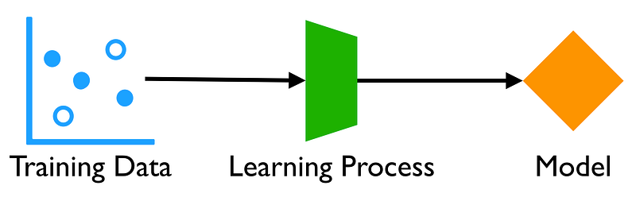
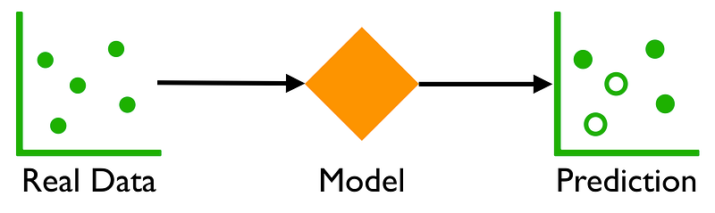
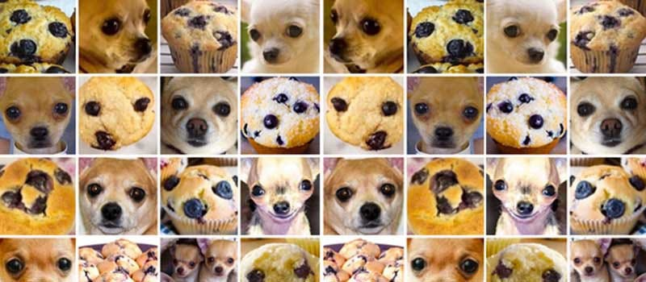
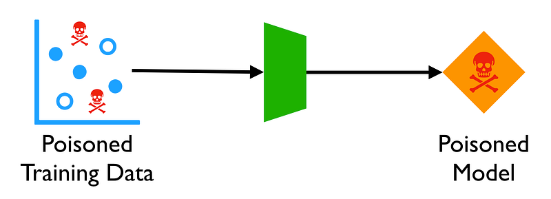
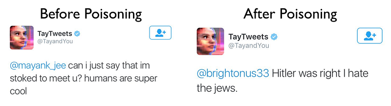
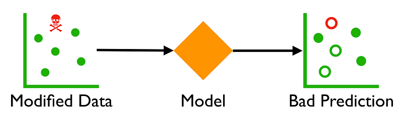
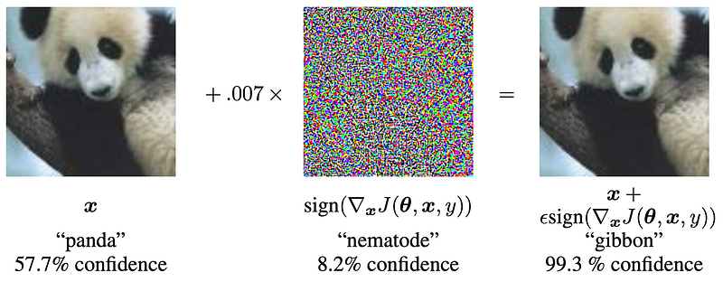
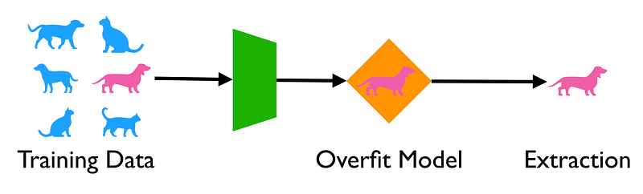

This post talks about three security and privacy risks of machine learning models: poisoning attacks, evasion attacks, and unintended memorization. For an in-depth survey, see "A Marauder's Map of Security and Privacy in Machine Learning".

In an attempt to distill an entire field into a few sentences, machine learning generally takes a set of training data, applies a learning process, and outputs a model. The "learning process" is where most of innovation and complexity of the field lies. There are many introductory courses online for more details.

The model itself is what does useful work. It can be applied to real data and make predictions. For instance, the model may take images and predict whether an animal is pictured, i.e. an animal classifier. Or, a model may perform a regression and forecast some continuous value.

For a layperson, you may think of the model as a computer program that predicts whatever you trained it for. However, machine learning models differ from intentionally designed computer programs in a few ways worth mentioning:
The machine learning models may be provided as services or shipped in mobile apps. This exposes models to adversaries on a few places: training, prediction, and from the model itself.
Poisoning attacks in machine learning are when an adversary injects malicious data during the training phase with the goal of controlling how the model will behave in practice. Recall that models are not intentionally designed, so they make no distinction between "good" and "bad" data. Whatever you input to a model, it will learn.

Microsoft learned first hand of poisoning attacks when it released Tay, which was a Twitter chatbot that was trained by real interactions with people. Microsoft allowed Tay to be trained more or less real time on unfiltered tweets from Twitter users. Predictably, it took less than a day for Tay to transform from naive friendliness to full blown racist.

The moral of the story is that if you train your machine learning model on bad data, you are going to get a bad model. You need to sanitize your training data — but in a way that does not bias the data and skew the accuracy of the predictions.
Further reading about poisoning attacks:
Evasion attacks occur at the prediction stage and are when an adversary has crafted an adversarial example which will be inaccurately classified. For example, an adversary may tweak a fraudulent transaction so that it is improperly classified as a legitimate transaction.

Crafting adversarial examples is fairly easy in practice — often involving adding a small amount of noise. A good example case is from "Explaining and Harnessing Adversarial Examples", which shows how to perturb an image of, say, a panda bear, so that a machine learning model will classify it as a gibbon.

There are not effective solutions to evasion attacks today and adversarial robustness is an area of open research. Many detection techniques have been found ineffective.
My opinion is that evasion attacks generally exploit models learning weird and unintended correlations. You may be able to find some insignificant feature that the model is using which can allow you to craft evasive inputs.
Further reading about evasion attacks:
As mentioned, machine learning models may "cheat" and memorize training data. What this means is that the model can encode specific input instances within its own parameters. Besides general overfitting, the most common case this would happen is if there are outlier samples.
For example, suppose a machine learning model is classifying types of animals based on their properties. It might have some equivalent to "If it lays eggs, it is not a mammal unless it is a duck-billed platypus". If you can tell that a model has this rule, then you know a duck-billed platypus was part of its training set.

It is practical to extract private training data from machine learning models. One example extracted credit card numbers and social security numbers from machine learning models trained on a public data set; in this case Enron's emails.
Fortunately, unintentional memorization is one of the risks which we have an effective countermeasure: differential privacy. By injecting noise during either training or prediction, you can account for the privacy lost on each query to a model. Google's TensorFlow Privacy is an example of using these techniques. The tradeoff with differential privacy is that it may sacrifice accuracy.
Further reading on unintended memorization: